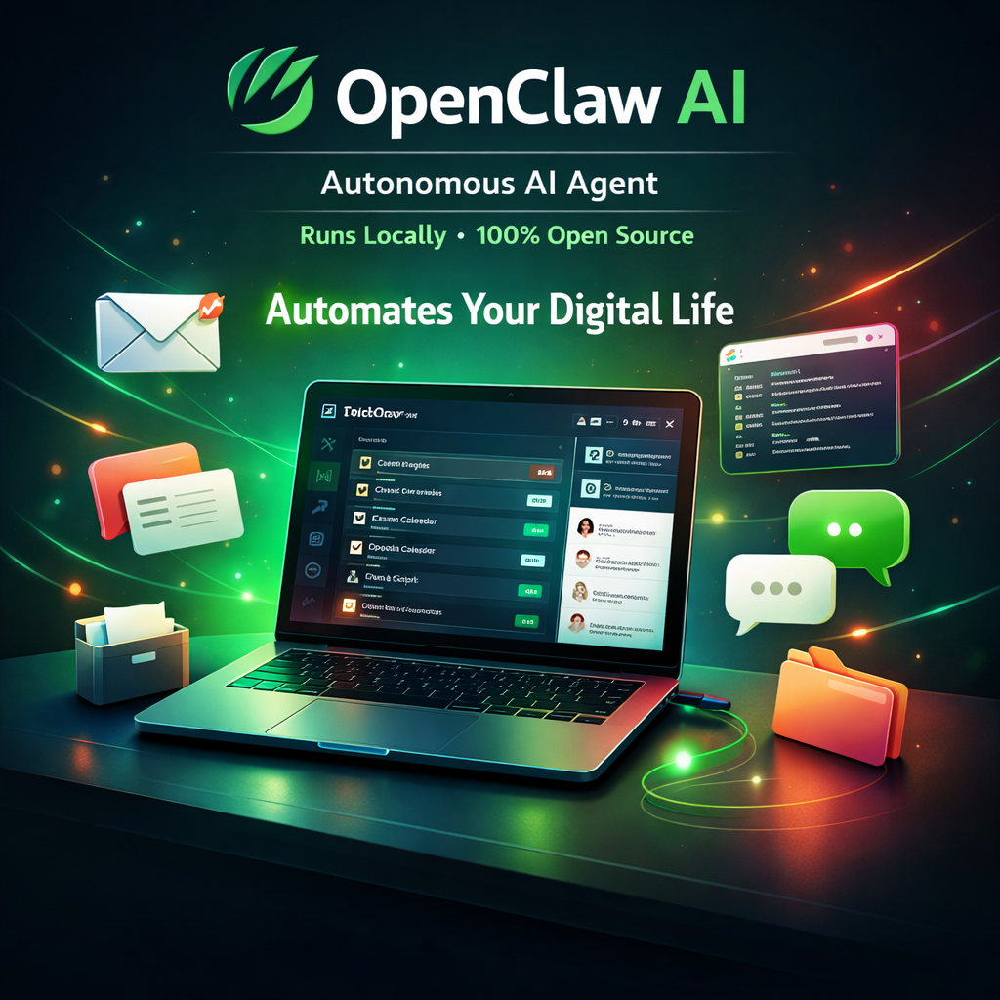

Something unusual happened in the AI world in early 2026: a single open-source project went from 9,000 to over 60,000 GitHub stars in just a few days. That project was OpenClaw — a free autonomous AI agent that does something most AI tools don't: it actually does things for you, not just answers questions.
If you've been hearing about OpenClaw (openclaw.ai) and wondering what the fuss is about — this article explains exactly what it is, how it works, and how to decide if it's right for you.
What Is OpenClaw?
OpenClaw is a local-first autonomous AI agent — an open-source application that runs on your machine (Mac, Windows, or Linux) and connects large language models to the real world around you: your files, your calendar, your email, your smart home, your messaging apps.
The key distinction: most AI tools (ChatGPT, Claude, Gemini) are reactive — you ask a question, they answer it. OpenClaw is proactive. You give it standing instructions and it runs tasks in the background, without you needing to be there.
The Origin Story
OpenClaw was originally called Clawdbot (and before that, Moltbot, then Molty). The project was created by a solo developer and gained momentum as a niche power-user tool. The viral growth moment came in early 2026 when a major update dropped with 45 new features, driving an explosion of social media attention.
A significant governance move followed: when the creator joined OpenAI in February 2026, rather than let OpenClaw become an OpenAI asset, ownership was transferred to an independent foundation. This ensures community-driven development continues regardless of where the original author works — a decision that earned widespread trust from the open-source community.
How OpenClaw Works
OpenClaw's architecture has three layers:
Messaging Interface
You control OpenClaw through WhatsApp, Telegram, Discord, or any chat app. Send a message, get a result. No new UI to learn.
LLM Brain
Connects to any LLM you provide (Claude, GPT-4o, Gemini, local Ollama models). The LLM decides which actions to take.
Local Execution Gateway
Runs on your machine with a secure sandbox. Can read/write files, run scripts, control the browser, and call external APIs.
Key Features
1. Persistent Memory (Markdown-Based)
OpenClaw stores your preferences, recurring instructions, and context as local Markdown files. You can read and edit these files directly — there's no black-box memory store. Tell OpenClaw "every morning, summarise my emails and remind me about today's calendar" once, and it remembers across sessions.
2. AgentSkills — 100+ Preconfigured Actions
Skills are modular capabilities you can add to OpenClaw. The default library includes skills for:
- File system management (search, create, move, rename files)
- Shell command execution in a secure sandbox
- Web automation (fill forms, click buttons, extract data from pages)
- Email reading and sending
- Calendar management (create events, check schedule, set reminders)
- Travel automation (check-in for flights when window opens)
- Smart home control (Philips Hue, Home Assistant integration)
- Music and media control (Spotify, YouTube)
3. Proactive Task Scheduling
OpenClaw has built-in cron-like scheduling. You can tell it: "every Sunday at 9am, summarise the week's news in tech and AI and send it to me on WhatsApp." It will do exactly that, indefinitely, without you prompting it again.
4. 50+ Third-Party Integrations
Pre-built connectors for productivity tools (Notion, Obsidian, Google Drive), smart home platforms (Home Assistant, IFTTT), communication tools (Gmail, Slack), and entertainment services.
5. Bring Your Own LLM
OpenClaw is LLM-agnostic. Point it at Claude via the Anthropic API, GPT-4o via OpenAI, Gemini via Google AI, or a locally running Ollama model. You control which model powers the intelligence, and you can switch models per task type for cost efficiency.
OpenClaw vs Claude Code (Open Claw CLI)
A common source of confusion: developers sometimes conflate OpenClaw with Claude Code, Anthropic's official CLI tool which is often called "open claw" because of how "Claude" is pronounced. They are completely different projects:
| Feature | OpenClaw (openclaw.ai) | Claude Code CLI (Anthropic) |
|---|---|---|
| Creator | Independent foundation (open source) | Anthropic (official product) |
| Primary use | Personal task automation, life admin | Software development, coding |
| Interface | WhatsApp, Telegram, Discord | Terminal / CLI |
| LLM | Any (you provide API keys) | Claude only (Anthropic models) |
| Runs | Locally on your machine | Locally on your machine |
| Cost | Free (pay your LLM costs) | Free (pay your Claude API costs) |
| Best for | Non-developers, personal automation | Developers, code editing |
Real-World Use Cases
For Developers
- Automated PR summaries: When a PR is merged, OpenClaw generates a changelog entry and posts it to your team Slack
- Daily standup prep: Each morning, summarise yesterday's commits and open issues from GitHub, formatted as a standup update
- Error monitoring digest: Summarise Sentry/Datadog errors from the past 24 hours every evening
- Code snippet library: "Save this code as a snippet tagged TypeScript, API client" — stores to a local Markdown file you can search later
For Everyone
- Email triage: "Every morning at 8am, read my inbox and WhatsApp me a summary of anything urgent"
- Travel automation: "Check me in for my Lufthansa flight the moment the 24-hour window opens"
- Research assistant: "Search the web for the latest news about [topic] and summarise it into a 5-point brief"
- Smart home scenes: "When I message 'movie time', dim the lights, turn on the TV input, and pause Spotify"
Getting Started with OpenClaw
The general setup flow involves:
# Clone the repository git clone https://github.com/openclaw/openclaw.git cd openclaw # Install dependencies npm install # Configure your LLM API key and messaging platform cp .env.example .env # Edit .env: add ANTHROPIC_API_KEY or OPENAI_API_KEY # Add your WhatsApp/Telegram bot credentials # Run OpenClaw npm start
Once running, you connect your messaging app (following the platform-specific setup guide) and start giving OpenClaw instructions in plain English through that chat interface.
Recommended LLM Configuration
For the best balance of capability and cost, the community recommends:
- Primary tasks (complex reasoning):
claude-sonnet-4-6orgpt-4o - Quick tasks (classification, simple lookups):
claude-haiku-4-5orgpt-4o-mini - Fully local/private option: Llama 3 70B via Ollama — no API costs, full privacy, but slower on most hardware
OpenClaw Timeline: How It Grew
Early Days as Moltbot / Clawdbot
Project started as a personal automation tool, gained a small following among power users and developers interested in AI agents.
Renamed to OpenClaw, ~9K Stars
Rebranded with the OpenClaw name. Gained traction in developer communities but remained relatively niche.
Creator Joins OpenAI — Project Transferred to Foundation
Creator's move to OpenAI prompted community concern. Proactive transfer to an independent foundation earned widespread trust.
Major Update: 45 New Features, 9K → 60K Stars
Massive update with 45 new features, 82 bug fixes went viral on social media. 60,000+ GitHub stars in days — one of the fastest-growing open-source projects of 2026.
Is OpenClaw Right for You?
You should try OpenClaw if:
- You want an AI that proactively does things without being prompted each time
- You care about privacy and want everything running locally
- You're comfortable with a brief technical setup process
- You want to automate repetitive tasks (email triage, calendar management, research digests)
- You prefer controlling your AI via messaging apps you already use
OpenClaw might not be the best fit if:
- You want a polished, zero-setup consumer product (OpenClaw requires some technical configuration)
- Your primary need is coding assistance (use Claude Code or GitHub Copilot instead)
- You need enterprise-grade security, SLA, or support
- You're not comfortable managing LLM API keys and costs
FAQs
Is OpenClaw the same as "open claw" (Claude Code)?
No. "Open claw" is an informal pronunciation of Claude Code (Anthropic's CLI tool). OpenClaw at openclaw.ai is a completely separate, community-built open-source project. Both happen to run locally, but they serve very different purposes.
Is OpenClaw safe to use?
OpenClaw runs in a local sandbox with file and shell access — which means you're granting it real permissions. Read the permission model documentation carefully, start with limited permissions, and review what skills you enable. The open-source nature means the code is fully auditable, which is a significant safety advantage over closed-source alternatives.
What LLMs does OpenClaw support?
OpenClaw supports any OpenAI-compatible API — including Anthropic (Claude), OpenAI (GPT-4o), Google (Gemini via compatible endpoint), and local models via Ollama. You configure the endpoint and API key in your .env file.
How much does OpenClaw cost to run?
OpenClaw itself is free. You pay only for the LLM API calls it makes. A typical personal-use setup running a few tasks per day costs $5–15/month in API credits depending on model choice and task complexity.
Want an AI Automation Built for Your Business?
I build custom AI agents, automation workflows, and Claude API integrations for startups and businesses. Free 30-minute strategy call.
Get Free Consultation →
Anju Batta
Senior Full Stack Developer & AI Automation Architect. I build AI-powered apps and automations for businesses using Claude, OpenAI, and tools like OpenClaw and n8n. Based in Chandigarh, India.
Read Next: Building Apps with the Claude API →